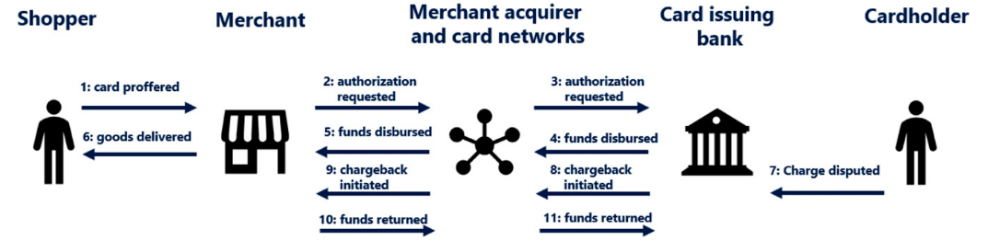

Limit fraud for online merchants.

Duration: 5 min | Date: Sept 22, 2023
For the last 3 years, I have immersed myself in the Gaming World at Ubisoft,
working on a Fraud Detection use case.
The primary objective of the project is
to block e-commerce transactions deemed too risky in real time.
But what risks are we talking about ? Let's discover how online
merchants can lose big money and tarnish their reputation due to e-commerce frauds and how
we leveraged Machine Learning at Ubisoft to tackle these issues.
First and foremost, we should define what is a Fraud.
Let's assume a transaction made by a shopper in Ubisoft e-commerce ecosystem. Ubisoft receives funds, the goods are delivered, the player can have fun. For most transactions, that's it. However in rare cases, several weeks or months later, a cardholder may be surprised with a Ubisoft charge on his bank account and dispute it to his bank. In that case, the bank will initiate a chargeback, that will be sent to Ubisoft through the card network. If Ubisoft can not show that the chargeback is an abuse from the cardholder, they have to return the funds to the cardholder, with additional chargeback fees charged by the Payment Service Provider (15euros in case of Paypal, 20 euros in case of Worldpay). On top of that, many products can not be withdrawn from the fraudster (shopper) player account, like Virtual Currency products that are not revocable. Virtual currency packs represent 80 to 90 % of the transactions we handle in this project and have a big success with players, thus are highly targeted by malicious customers. The malicious actors can then sell your products at a very low price and gain a good margin.
You can now imagine how this money can be used in the end, to isolated fraudsters trying to earn easy money to organized groups willing to finance criminal organisations. It can come from a lot of different means : (see mendeleiev fraud + prez mlgroup 4 blocks)
Bank chargebacks pose a significant threat (exponential growth for business), try to be the best compared to other actors in e-commerce, not totally fraud-proof. accompanied by the specter of escalating fees and exponential growth. Understanding and mitigating this risk has been a pivotal aspect of our fraud detection initiative. Grey market : Money laundering, soft money. With this perspective, we now can rephrase our problematic for this project : How can we keep the chargeback rate under control ? Detail challenges that lead to ML solutions below : SLA with low latency, labels not available if we block the transaction, label latency due to chargeback workflow, high class imbalance... Big sandbox for ML practicioners, at least junior ones. Ideal subject to learn and grow as it's down to earth and critical for business.
First, historically the first system used at Ubisoft was a big rule based system. On the one hand, rule based systems decisions are easy to explain if a customer complains and are rule sets are pretty simple so the fraud check is very quick. Our approach involves a robust set of components:
As said in the first part, we aimed at replacing a third party tool, that is a rule based fraud detection system. The success of our project is reflected in key metrics such as a notable gain in net sales, the efficiency of our tech stack, and the valuable time saved by fraud experts. Also, we noticed several capital human errors made on the rule based system. Lastly, we replaced the third party tool on 80% of transactions, so a total of 200k euros per day on average.
To estimate gains accurately, we implemented a controlled experiment using a Control Group and AB testing methodology. This allowed us to rigorously assess the impact of our fraud detection system and refine our strategies.
Our approach combines the power of XGBoost with explainability tools like explainerdashboards. This ensures that the model not only detects fraud effectively but also provides insights into its decision-making process. On top of that, we added unit tests on ML model performances (find an article on why ML models should be tested like classical software)
Leveraging the capabilities of the AWS platform, our fraud detection system is hosted on a scalable and secure infrastructure. Tableau dashboards provide intuitive visualizations for monitoring and analysis.
As part of our continuous improvement, we delved into research on one-class supervised learning and semi-supervised techniques, exploring innovative approaches to enhance our fraud detection capabilities. In the end too complex and no big added value on tabular data. But that was nice to work on something different.
Fp-growth, power in the end of fraud experts instead of ml teams who deploy ml models, smart rule engine periodically retrained and rules proposed. https://www.uber.com/en-FR/blog/project-radar-intelligent-early-fraud-detection/